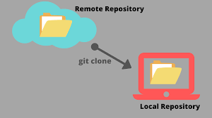
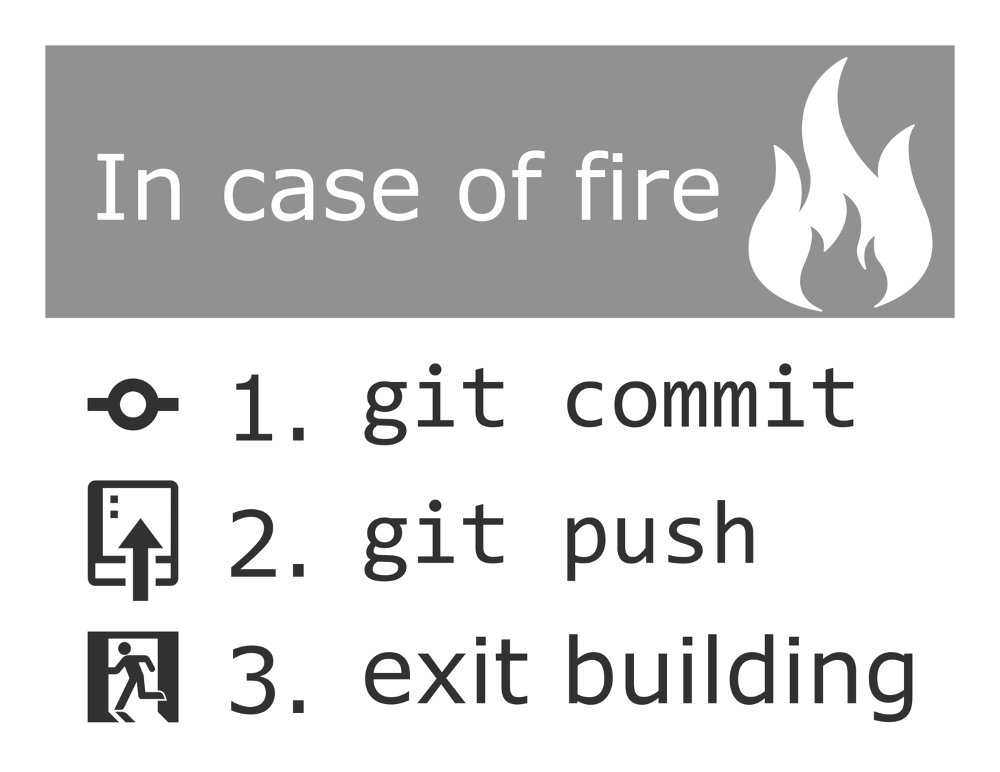

Comandos Esenciales de Git y GitHub
|  |
Para empezar a trabajar con GitHub, primero debes clonar un repositorio. |
|  |
Después de realizar cambios en tu proyecto, puedes guardar estos cambios |

|
Una vez realizados los commits, puedes subir los cambios a GitHub con |

|
Al trabajar en GitHub, es buena práctica crear ramas para trabajar en nuevas características |

|
Una vez que hayas terminado tu trabajo en una rama, puedes hacer un |

|
Cuando se apruebe tu Pull Request, puedes fusionar tu rama con la principal |